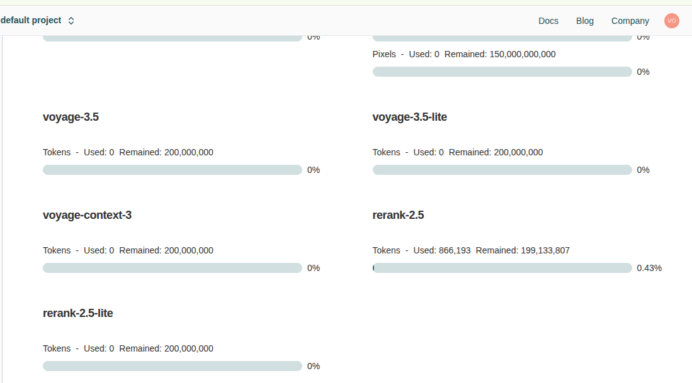

Resources
Useful services and tools to power your semantic search ecosystem.
Recommended Services
These are services I find useful and use in my own setup. They offer generous free tiers or trials that make experimenting with this ecosystem accessible.
Embeddings Providers
Nebius AI Studio
Website: nebius.com
What they offer: - $1 free trial credit - Access to ~100 million embeddings with Qwen models - No credit card required initially - Great for getting started without commitment
Why it's useful: - Massive free tier for experimentation - Qwen embeddings are high quality - Perfect for indexing medium to large codebases - API is OpenAI-compatible (easy integration)
Models available:
- Qwen/Qwen3-Embedding-8B (4096 dimensions)
- Other Qwen variants
Configuration example:
EMBED_PROVIDER=openai-compatible
EMBED_BASE_URL=https://api.studio.nebius.com/v1/
EMBED_API_KEY=your-nebius-key
EMBED_MODEL=Qwen/Qwen3-Embedding-8B
EMBED_DIMENSION=4096
Voyage AI
Website: voyageai.com
What they offer: - Free tier with generous limits - ~200 million tokens for embeddings - Native reranking models (rerank-2.5, rerank-2.5-lite) - Requires credit card but no charges until you exceed free tier

Voyage AI dashboard showing available tokens and models
Why it's useful: - Best-in-class reranking (+42% relevance improvement) - Fast response times (~200ms for reranking) - Generous free tier for production use - Both embeddings and reranking in one service
Models available:
Embeddings:
- voyage-3.5 (200M tokens free)
- voyage-3.5-lite (200M tokens free)
- voyage-context-3 (200M tokens free)
Reranking:
- rerank-2.5 (200M tokens free)
- rerank-2.5-lite (200M tokens free)
Configuration example:
# For embeddings
EMBED_PROVIDER=openai-compatible
EMBED_BASE_URL=https://api.voyageai.com/v1
EMBED_API_KEY=pa-your-voyage-key
EMBED_MODEL=voyage-3.5
# For reranking
MCP_CODEBASE_VOYAGE_API_KEY=pa-your-voyage-key
MCP_CODEBASE_VOYAGE_RERANK_MODEL=rerank-2.5-lite
MCP_CODEBASE_NATIVE_RERANK=true
LLM Providers (for Hooks & Reranking)
OpenRouter
Website: openrouter.ai
What they offer: - Access to multiple LLM providers through one API - Free models available (DeepSeek, Qwen, Llama, etc.) - Pay-as-you-go pricing for premium models - No subscription required
Why it's useful: - Perfect for LLM judge reranking (when not using Voyage) - Great for commit summarization in hooks - Free models work great for code analysis tasks - Simple and cheap for most use cases
Recommended free/cheap models:
- deepseek/deepseek-chat (Free) - Excellent for code
- qwen/qwen-2.5-72b-instruct (Free) - Great reasoning
- meta-llama/llama-3.1-8b-instruct (Free) - Fast and reliable
Use cases in this ecosystem: - Refined answers: LLM analysis of search results - Commit analysis: Semantic understanding of git history - Hook summarization: Context generation in Claude Hooks
Configuration example:
# For refined answers / LLM judge
MCP_CODEBASE_JUDGE_PROVIDER=openai-compatible
MCP_CODEBASE_JUDGE_BASE_URL=https://openrouter.ai/api/v1
MCP_CODEBASE_JUDGE_API_KEY=sk-or-v1-your-key
MCP_CODEBASE_JUDGE_MODEL_ID=deepseek/deepseek-chat
# For git commit analysis
TRACK_GIT_LLM_PROVIDER=openai-compatible
TRACK_GIT_LLM_ENDPOINT=https://openrouter.ai/api/v1
TRACK_GIT_LLM_MODEL=qwen/qwen-2.5-72b-instruct
TRACK_GIT_LLM_API_KEY=sk-or-v1-your-key
My Personal Setup
What I use:
For embeddings, I use Azure's text-embedding-3-small because:
- Speed is excellent
- I don't find significant differences using higher-dimension models
- Cost-effective for my usage
- Consistent performance
For reranking, I use Voyage AI's native reranker because: - Fast (~200ms) - Significant accuracy improvement (+42%) - Specialized models beat general LLM reranking - Free tier is more than enough
My configuration:
# Embeddings: Azure
EMBED_PROVIDER=openai-compatible
EMBED_BASE_URL=https://my-azure-endpoint.openai.azure.com/
EMBED_API_KEY=azure-key
EMBED_MODEL=text-embedding-3-small
EMBED_DIMENSION=1536
# Reranking: Voyage
MCP_CODEBASE_NATIVE_RERANK=true
MCP_CODEBASE_VOYAGE_API_KEY=pa-voyage-key
MCP_CODEBASE_VOYAGE_RERANK_MODEL=rerank-2.5-lite
Why this combination: - Azure embeddings: Speed + consistency - Voyage reranking: Accuracy + speed - Both have proven reliable in production - Cost-effective for daily use
Alternative: Google Gemini
Website: ai.google.dev
What they offer:
- Free tier for embeddings
- Free tier for LLM access
- text-embedding-004 model
- Gemini-2.5 Flash (current model, replacing deprecated 1.5)
SDK Not Supported
This project uses OpenAI-compatible APIs. Gemini's SDK is not natively supported.
To use Gemini, you would need to:
- For embeddings: Write an adapter to convert Gemini's API to OpenAI format
- For LLM: Same - adapt the response format
- Modify the codebase: Update
src/embedder/and potentiallysrc/judge.py
Feasibility: - ✅ Technically possible - ✅ Gemini offers good models (Gemini-2.5 Flash is excellent) - ⚠️ Requires custom development - ⚠️ Not plug-and-play like OpenAI-compatible APIs
If you're interested in Gemini integration:
- Check the src/embedder/ directory
- Look at existing OpenAI-compatible implementations
- Create a new geminiEmbedder.ts following the pattern
- Submit a PR if you implement it!
Cost Comparison
Here's a rough comparison for indexing a medium-sized codebase (~500 files, ~50K lines):
| Service | Embeddings Cost | Reranking Cost (1000 queries) | Total |
|---|---|---|---|
| Nebius (Qwen) | Free ($1 trial) | N/A | $0 |
| Voyage AI | Free (generous tier) | Free (generous tier) | $0 |
| Azure (text-small) | ~$0.50 | N/A | $0.50 |
| OpenRouter (free models) + Voyage | Free | Free (generous tier) | $0 |
For most users: - Start with Nebius (free $1 gets you very far) - Add Voyage for reranking (free tier is generous) - Use OpenRouter only if you need LLM analysis
My recommendation: - Index with Nebius or Azure (whichever is faster/cheaper for you) - Rerank with Voyage native reranker (best accuracy/speed) - LLM judge with OpenRouter (only when needed)
Dimensions: Does Size Matter?
My experience: I don't find significant differences using models with larger dimensions for code search.
Comparison:
| Model | Dimensions | Speed | Accuracy (subjective) |
|---|---|---|---|
| text-embedding-3-small | 1536 | ⚡ Fast | ✅ Great |
| Qwen3-Embedding-8B | 4096 | 🐢 Slower | ✅ Great |
| voyage-3.5 | 1024 | ⚡ Fast | ✅ Great |
What matters more: 1. Query quality - How you phrase searches 2. Reranking - Voyage native reranker adds more value than higher dimensions 3. Prompt - Teaching the agent when to search is more important than embedding size
When higher dimensions help: - Very large codebases (1M+ lines) - Multi-language projects with complex relationships - When you need to capture very subtle semantic differences
For most projects: - 1024-1536 dimensions are perfect - Focus on prompt quality and reranking instead - Save money and get faster results
Getting Started
Recommended path for new users:
- Sign up for Nebius ($1 free trial)
- Get API key
-
Use for embeddings (100M embeddings free!)
-
Sign up for Voyage AI (requires credit card, but free tier)
- Get API key
-
Use for reranking only
-
Configure both:
# Embeddings: Nebius EMBED_PROVIDER=openai-compatible EMBED_BASE_URL=https://api.studio.nebius.com/v1/ EMBED_API_KEY=your-nebius-key EMBED_MODEL=Qwen/Qwen3-Embedding-8B # Reranking: Voyage MCP_CODEBASE_NATIVE_RERANK=true MCP_CODEBASE_VOYAGE_API_KEY=pa-your-voyage-key MCP_CODEBASE_VOYAGE_RERANK_MODEL=rerank-2.5-lite -
Index your codebase:
-
Test semantic search:
Total cost: $0 for most medium codebases!
Further Reading
- Codebase Index CLI - Setup and usage
- Semantic Search MCP - Configuration details
- Prompt Configuration - Maximize search quality
Contributing
If you discover other useful services or have experience with different providers, please share! Open an issue or PR to add:
- New provider recommendations
- Cost comparisons
- Performance benchmarks
- Integration guides
Help make this ecosystem accessible to everyone.